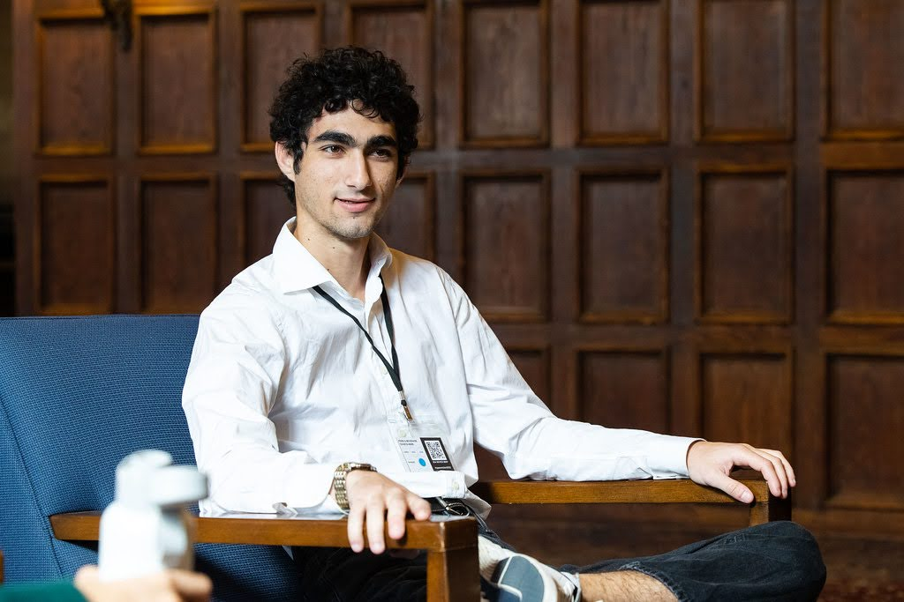

Casey Hartman
M.Sc. Astrophysics · Université de Genève
I am a second-year master's student in astrophysics at the Université de Genève, working at the Observatoire de Genève on exoplanet dynamics, stellar surface physics, and machine learning in astronomy. For my master's thesis I am part of the ATREIDES collaboration, combining Gaia DR4 astrometry with radial velocities to search for the wide-orbit companions that may have pushed close-in Neptunes onto their current orbits. Alongside my thesis, I am extending the ANTARESS workflow to model stars distorted by both rotation and the tides raised by a close-in planet, starting with WASP-12. Last semester I worked with the Cosmic Dawn group, applying contrastive self-supervised learning to JWST NIRSpec prism spectra to find rare high-redshift galaxies.
Before moving to Geneva, I completed my B.S. in Astrophysics (Magna Cum Laude) at Tufts University, where I searched for circumbinary planets in TESS data and spent a summer at the Weizmann Institute of Science working on the XENONnT dark matter experiment. At Tufts I was the Director of Finance and later Chair of the Board for Tufts Students for the Exploration and Development of Space (SEDS). Outside of research I play piano, write my own music, and do astrophotography.

Recent
Hartman, C., Bourrier, V., et al., "Stellar Tides in High-Resolution Transit Spectroscopy with ANTARESS" (working title).
Bourrier, V., et al. (incl. Hartman, C.), "ATREIDES: Characterizing the Companions of Exo-Neptunes with Gaia DR4" (working title).
Bourrier, V., et al. (incl. Hartman, C.), "ATREIDES: A Gaia DR4 Search for Wide-Orbit Companions of Exo-Neptunes" (working title).
Presented research on disk truncation in binaries at a departmental seminar, Université de Genève.
SPS Zone Meeting Presentation, Tufts University.